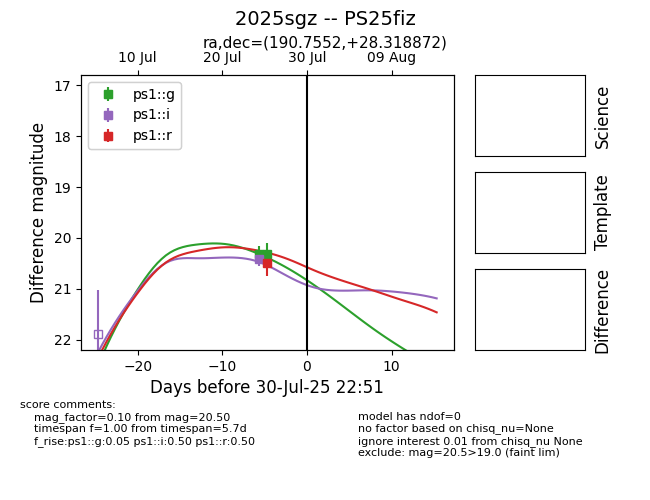

Target 2025sgz at 2025-07-30 22:51, see:
TNS: wis-tns.org/object/2025sgz
YSE: ziggy.ucolick.org/yse/transient_detail/2025sgz
alt names
2025sgz (yse,tns)
PS25fiz (panstarrs)
coordinates:
equatorial (ra, dec) = (190.7552,+28.31887)
galactic (l, b) = (179.8600,+87.78933)
photometry
last ps1::g=20.32, ps1::i=20.41, ps1::r=20.50
2 ps1::g, 1 ps1::i, 1 ps1::r detections
